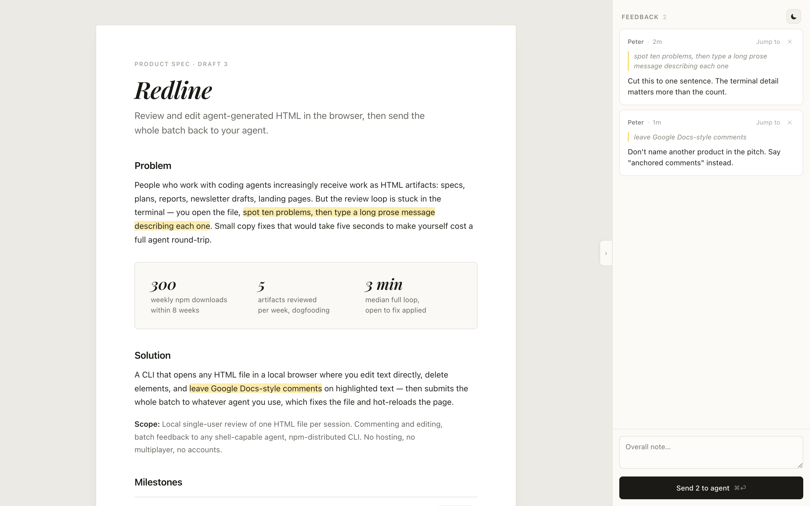
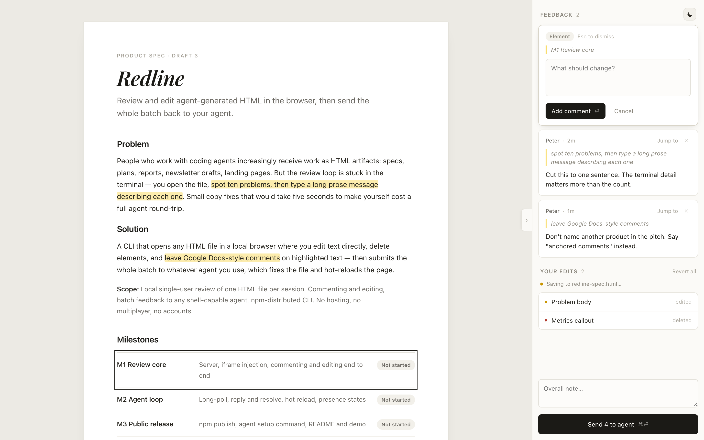

No modes
The document is always editable. A selection is a comment anchor, never a mode change — so nothing has to be switched before you act.
Last updated July 26, 2026
Review and edit agent-generated HTML in the browser, then send the whole batch back to your agent.
People who work with coding agents (Claude Code, Codex, and others) increasingly receive work as HTML artifacts: specs, plans, reports, newsletter drafts, landing pages, slide decks. Anthropic itself promotes HTML as the preferred format for agent output (Claude blog: "The unreasonable effectiveness of HTML"). But the review loop is stuck in the terminal: you open the file, spot problems, then type a long prose message describing each one — or paste annotated screenshots. Small copy fixes that you could type yourself in five seconds cost a full agent round-trip.
The pain is validated by a wave of new tools attacking pieces of it: lavish-axi (annotate elements and text, send to agent — but read-only, no direct editing, no persistent comments), plannotator (plan and diff markup for 9+ agents), Markloop (hosted comments over MCP), and reviewable-html-workbench (inline comment threads). None lets you fix the small things yourself and comment on the rest in one pass, locally, with any agent. Outside the agent world, Vercel Preview Comments and tools like Pastel prove in-place commenting is how people want to review web content.
edit-html <file> to feedback sent, agent fix applied, and page reloaded; loop speed is the reason to adopt.A CLI that opens any HTML file as an editable page in a local browser: fix small things by typing, comment on everything else by selecting it, then send the whole batch — comments and the list of your edits — to whatever agent you use.
Core loop: Agent writes HTML → edit-html <file> opens it → human edits directly (autosaved) and comments in the rail → Send N to agent → agent applies fixes → page hot-reloads → repeat.
Scope: Local single-user review, one page at a time. No modes, no accounts, no hosting, no multiplayer, no agent chat. Distributed as an npm CLI named edit-html (verified available July 26, 2026), plus a small skill that teaches agents when to run it.
| Label | Behavior |
|---|---|
| Open | edit-html <file.html> starts a local server on a free port (reusing a running instance if one exists), registers a session keyed by sha256(realpath(file)), and opens the default browser. Exits 1 with File not found: <path> if the file doesn't exist. |
| Untouched artifact | The artifact loads in an iframe with exactly one injected <script> tag before </body>. Opening the saved file directly in a browser renders identically to opening it in edit-html — edit-html never writes its own markup, highlights, or attributes into the file. |
| Label | Behavior |
|---|---|
| Full-bleed rendering | The artifact fills the area left of the rail and renders exactly as it would standalone — its own background, width, type, and layout. edit-html imposes no page frame, max-width, or paper background, so a document artifact that centres itself still looks like a document and a landing page still runs edge to edge. |
| Always editable | The document is contenteditable at all times — there is no editing mode and no mode toggle. Clicking places a cursor and typing changes the page immediately. A text selection anchors a comment rather than switching any mode. |
| Element delete | Hovering a target element outlines it and shows a floating ✕ chip at its top-right corner. Clicking the chip removes the element and logs it to Your edits as deleted. |
| Target resolution | Commentable and deletable targets are resolved from data-container / data-block attributes when the artifact has them, using their value as the display label. Otherwise edit-html falls back to the nearest block-level ancestor with visible content, labelled from its nearest preceding heading plus tag (for example Problem · p), truncated at 40 characters. |
| Autosave | Edits write to the original file continuously, debounced ~800ms after the last keystroke. No Save button exists. Status appears in the rail as Saving to <filename>… (amber dot) then Saved to <filename> · 2:41 PM (green dot). Write failures replace the line with Couldn't save — retrying… in the danger color and retry every 2s. |
| ⌘S | Intercepted and swallowed so the browser's Save dialog never appears. If unsaved keystrokes exist it flushes them immediately; otherwise it re-shows the saved status line. It is reassurance only, never a state change. |
| Revert all | Revert all in the Your edits header restores the current page — and its file on disk — to exactly how the agent last left it, then clears that page's edit list. Confirm dialog: "Discard all N of your edits?" Comments are not affected. |
| ⌘-click to interact | A plain click always edits or comments; ⌘-click (Ctrl on Windows and Linux) activates the artifact's own behavior — following a link, switching a tab, opening an accordion. Hovering a link or button shows the hint ⌘-click to open. Without the modifier, links never navigate and buttons never fire. |
| External links | A ⌘-clicked link to a non-local URL opens in a new browser tab and leaves the review untouched, since edit-html can only edit local files. |
| Label | Behavior |
|---|---|
| Compose on selection | Releasing a non-empty text selection in the document opens the compose card at the top of the rail with the textarea already focused, chip Selection, the quoted text, and hint Esc to dismiss. The selected range highlights in amber. Compose never floats over the document. |
| Compose on element | Clicking a target element with no active selection opens the same card with chip Element and the resolved label in place of a quote; the element outlines instead of highlighting. |
| Commit | Textarea placeholder What should change?. Add comment (or Enter) commits; Shift+Enter inserts a newline; Cancel or Esc discards and removes the pending highlight. |
| Dismiss protection | Selecting elsewhere or clicking away dismisses an empty compose card and drops its highlight. If any text has been typed, the card stays and its highlight persists — typed feedback is never destroyed by a stray click, including by navigating away. |
| Comment card | Header is author · relative time, then Jump to and ✕. Body is the quote (or element label) above the feedback text. There is no resolve action and no status chip: a comment exists until you delete it or send it. ✕ deletes the comment and its highlight with no confirm. |
| Card ↔ highlight | Clicking a card makes it active (left amber rail marker) and outlines its anchor in the document. Jump to smooth-scrolls the anchor to roughly the upper third of the viewport. Clicking a highlight in the document activates its card. |
| Hidden anchors | If an anchor sits inside a collapsed or hidden region of the same page (a tab panel, an accordion), activating its card first tries to reveal it by clicking the control that aria-controls it. If that fails, the card shows a not in this view badge instead of scrolling nowhere. |
| Empty state | With no comments and nothing composing, the rail shows a dashed placeholder: Select text or click an element to comment on it. |
| Your edits | Once any edit exists, a YOUR EDITS n section lists one row per changed target — its resolved label and kind (edited amber dot / deleted red dot), deduped by label+kind. It sits below comments, above the footer, with the save status line beneath its header. |
| Panel collapse | A 22×46px handle on the rail's left edge collapses it to 0 and back; the glyph flips ›/‹ with title Hide comments panel/Show comments panel. Collapsed state persists for the session. |
| Chrome theme | A ☾/☀ toggle in the rail header switches the app chrome between light and dark and persists. It never touches the document, which always renders exactly as the agent authored it. |
| Label | Behavior |
|---|---|
| One page at a time | The rail always shows the feedback for the page currently on screen. Comments and edits belong to a file, not to a browsing session, and there is no cross-page aggregation anywhere in the product. |
| Navigating is free | Nothing gates navigation and nothing is lost by it: edits are already on disk from autosave, and comments persist by file path. Arriving at a new page shows an empty rail; returning to a page restores every comment and highlight exactly as you left them. |
| Pending compose | Navigating with text typed into the compose card commits it as a comment on the page you are leaving rather than discarding it, consistent with dismiss protection. |
| Label | Behavior |
|---|---|
| Send N to agent | One primary action at the rail footer, labelled Send N to agent where N is this page's comments plus edits. It submits those comments, that edit list, and the optional overall note as a single batch. Sending is independent of saving: edits are already on disk before you send. |
| Button states | Disabled and muted as Nothing to send yet when N is 0. Active with the ⌘⏎ hint when N > 0. After sending it reads Sent — waiting for agent and stays disabled until new feedback exists. |
| Overall note | An auto-growing Overall note… textarea above the button (max 40vh) carries page-level feedback not tied to any anchor. It clears on send. |
| Agent working | After sending, a single footer line appears: amber dot + Agent working — page reloads when fixes land. It is status, not a message: the agent has no reply channel and never writes text into the rail. The changed page is the only response. |
| Label | Behavior |
|---|---|
| Poll | edit-html poll <file.html> long-polls the browser session that file opened — not the file itself — so one command keeps listening even after you navigate to another page. It prints one JSON object to stdout when a batch arrives: { status, file, comments, edits, overall_note, dom_snapshot }, where file is the absolute path of the page the feedback is about. Whitespace heartbeats keep the connection alive through proxies and CLI timeouts; wait narration goes to stderr only. |
| Payload | Each comment carries id, kind (selection or element), quote, anchor, and feedback. Each edit carries label and kind (edited or deleted) so the agent knows which parts the human already changed and must not revert. |
| Delivery | At-least-once: a batch stays pending until the agent acknowledges with edit-html poll <file> --ack, so a crashed agent can re-poll without losing feedback. Sent comments disappear from the rail on acknowledgement. |
| Label | Behavior |
|---|---|
| Hot reload | A file watcher reloads the page when the agent edits the file on screen, preserving scroll position and re-anchoring remaining highlights. edit-html's own autosaves are echo-suppressed so typing never triggers a reload. Edits to a file you are not currently viewing reload nothing and are picked up when you next visit it. |
| Edit conflict | If the agent's write lands while unflushed keystrokes exist, edit-html flushes first, then reloads and takes the agent's version. The affected rows leave Your edits and the line Agent rewrote 2 blocks you had edited appears in their place. |
| Orphaned anchors | A comment whose anchor can no longer be found after an edit or reload keeps its card, drops its highlight, and shows an orphaned badge; the quoted text still ships to the agent. |
| Label | Behavior |
|---|---|
| npm | Published as edit-html so npx -y edit-html <file.html> works with zero install. Node ≥20; macOS, Linux, Windows. |
| Agent setup | edit-html setup installs a skill or instructions file for detected agents (Claude Code .claude/skills/, Codex AGENTS.md snippet) teaching the loop: write HTML, open it with edit-html <file>, then edit-html poll <file> and apply feedback. It also documents the optional data-block convention for better edit labels. Any other agent is supported through the JSON contract — no per-agent code in core. |
| Docs | README covers quick start, a demo GIF of the full loop, and the JSON contract. Free and open source; distribution through Peter's channels and a skills.sh listing. |
| Decision | Why it is open | Owner · date |
|---|---|---|
| Keyboard-driven artifacts | ⌘-click covers links, tabs, and accordions, but slide decks and prototypes are driven by arrow keys, which contenteditable consumes for the caret. Fixing it needs an Interact state that hands keys back — a second mode, on a different axis than the commenting/editing split that was cut. Deferred until M1 dogfooding shows whether it bites. | Peter · after M1 |
| Per-edit revert | M1 ships all-or-nothing Revert all plus native ⌘Z. Per-row revert needs a per-block edit journal with before/after content rather than one pristine snapshot. Revisit if losing good edits to undo one bad edit proves annoying in practice. | Peter · after M1 |
The artifact renders as itself, edge to edge, and the rail sits beside it. There is no top bar and no toolbar: the only persistent chrome is the rail, and everything it holds is either something you wrote or something about to be sent. Status that used to justify a top bar — filename, save state, agent activity — is demoted to one line of text each, in the rail, and only while it is true.
The document is always editable. A selection is a comment anchor, never a mode change — so nothing has to be switched before you act.
Chrome theming and chrome layout both stop at the rail. The artifact keeps its own width, background, and type, and nothing edit-html draws is ever written to the file.
Send is the only button that commits anything outward. Saving is ambient and continuous, so it needs a status line, not a control.

Jump to · ✕, no resolve and no status chip), the panel-collapse handle on the rail edge, and the single primary action Send 2 to agent. The centred sheet and warm margin come from this artifact's own styling — edit-html imposes no frame.
Element, Esc to dismiss), the Your edits list with Revert all and the autosave status line, and how N in Send 4 to agent counts this page's comments plus edits.| Dimension | Rule |
|---|---|
| Color | Two independent palettes. Chrome (themed) light: canvas #eceae4, rail #fbfaf7, card #ffffff, hairline #e4e2db, text #26241e, muted #8b877d, faint #b6b2a8, button #1b1a16; dark: #171614 / #1f1e1b / #262420 / #2f2d29 / #eae7e0 / #9c968a / #6e6961 / #f0ede6. Artifact: no palette — it keeps its own. Signals: amber #c99500 saving, green #7d9370 saved, danger #b23b2e delete. Highlight rgba(245,196,0,.32), hover rgba(243,176,0,.5), selection rgba(245,196,0,.42) — the only colors edit-html paints onto the artifact, and all translucent so they read over any background. |
| Typography | System sans throughout the chrome: 13px/1.5 base, comment body 13px, quotes 12px italic, rail section labels 11px/600 uppercase 0.08em tracking. The artifact's own type is never overridden. |
| Spacing and shape | Rail is a fixed 352px column; the artifact takes all remaining width. Radii: cards and inputs 6–8px, chips 999px, edge handle 7px 0 0 7px. One shadow, on the compose card (0 4px 14px -8px); everything else is hairlines. |
| Icons and motion | Glyphs only — ✕ delete, ›/‹ collapse, ☾/☀ theme, plus 5–6px status dots. No icon set. Compose and Your edits enter with a 130–140ms ease-out rise; the delete chip pops in 120ms; scroll-to-anchor is smooth. All animation is suppressed under prefers-reduced-motion. |
| Component | Purpose | States | Required behavior |
|---|---|---|---|
| Artifact surface | The page under review | idle, focused, hover-target, hover-interactive | Always editable and full-bleed; hovering a target outlines it and reveals its delete chip; hovering a link or button shows the ⌘-click to open hint; never adopts the chrome theme or layout |
| Highlight | Mark a commented range | pending, committed, active, orphaned | Translucent amber wash, darker on hover; clicking activates its card; stripped at serialization so it never reaches the file |
| Delete chip | Remove an element | hidden, hover, focus | 23px circle overlapping the target's top-right corner; inverts to danger on hover; removal logs an edit row |
| Compose card | Write a comment in the rail | selection, element | Opens focused at the top of the rail; kind chip plus Esc to dismiss; empty dismisses on click-away, non-empty persists and commits on navigation |
| Comment card | Hold one piece of feedback | default, active, orphaned, not-in-view | author · time · Jump to · ✕; active shows an inset amber rail marker; no resolve, no status chip |
| Edit row | Account for one direct change | edited, deleted | Colored dot, resolved label, kind at the right; deduped by label+kind; appears only once at least one edit exists |
| Save line | Report autosave truthfully | saving, saved, failed | Dot + text under the Your edits header; never a button; failure states are visible and self-retrying |
| Send button | Commit the batch outward | empty, ready, sent | Full-width footer button; counts this page's comments + edits; ⌘⏎; disabled while awaiting the agent |
| Edge handle | Collapse the rail | open, collapsed | Fixed at the rail's left edge, vertically centred; glyph and title flip with state |
Nothing is built yet. Research is complete: a full teardown of MIT-licensed lavish-axi, whose SDK injection, long-poll, and file-path session identity edit-html adopts — its gaps (direct editing, persistent comments) are exactly edit-html's additions. The interaction model is settled in the Claude Design file Redline.dc.html, mirrored locally under design-ref/.
| Layer | Choice + status | Why | Cost or risk |
|---|---|---|---|
| CLI + server | Node 20+, Express · not started | Boring, proven; matches lavish-axi's working model | None meaningful |
| Browser UI | Vanilla JS, no framework · not started | One injected SDK plus one chrome page; no build step | Hand-rolled DOM state for rail and compose |
| Artifact isolation | Sandboxed iframe + postMessage · not started | Full-bleed rendering means the artifact's CSS would otherwise collide with the rail's; the iframe makes isolation free | Selection, edits, and serialization must round-trip postMessage |
| Edit capture | contenteditable + input events, target resolved per the Product rules · not started | Instant visible edits; data-block when present, DOM heuristic otherwise, so arbitrary artifacts work | Heuristic labels are worse than authored ones; caret behavior at complex layout boundaries |
| Persistence | Debounced serialize + atomic write (tmp + rename) · not started | Continuous autosave with no Save button; atomic rename prevents half-written files | Serializer must strip highlights and the injected script every time |
| Highlights | <mark data-anchor> in the live DOM · not started | Survives contenteditable reflow far better than the Custom Highlight API, which loses ranges on edit | Pollutes the DOM, so serialization must unwrap them — covered by a test |
| Navigation | Intercepted in the iframe SDK · not started | Plain clicks stay inert so editing is unambiguous; ⌘-click resolves the target, and a local file becomes the new active page in the same browser session | ⌘-click is not discoverable without the hover hint |
| File watching | chokidar with echo suppression · not started | Agent writes hot-reload; own writes don't | Suppression window must survive rapid autosaves |
| State | JSON at ~/.edit-html/state.json · not started | No DB; survives restarts; comments and edits keyed by file-path hash so pages are independent | Whole-file rewrite per mutation (fine at this scale) |
| Agent transport | Long-poll HTTP + stdout JSON, subscribed per browser session · not started | Any agent with a shell works with zero setup; session-scoped polling means one command survives navigation | No native MCP integration; wrapper possible later |
Running cost: $0 — local-only, nothing leaves the machine. Support surface is GitHub issues.
| Entity | Purpose | Important fields + relationships | Access |
|---|---|---|---|
| Browser session | One open edit-html window and the agent listening to it | id, entry_file, active_file, poll_state. Owns nothing durable — it only routes a sent batch to the waiting poll | Discarded when the window closes; the agent subscribes by entry file |
| Page | Everything known about one HTML file | key (sha256 of realpath), file, pristine (agent's last version, for Revert all), pending_batch, updated_at; owns its Comments and Edits. Pages are fully independent — no page references another | Local user only, in ~/.edit-html/state.json |
| Comment | One piece of anchored feedback | id, kind (selection/element), quote, anchor (selector + node path + offsets + quote context), feedback, created_at; no resolve or status field by design | Read by the agent on poll; removed on acknowledgement or ✕ |
| Edit | Account for one direct change | label (authored or heuristic), kind (edited/deleted), at; unique on label+kind. Ships with the batch so the agent won't undo human work | Cleared by Revert all, by acknowledgement, or when the agent rewrites that target |
| Artifact file | The reviewed HTML itself | At the user's original path; written by autosave and by the agent, never by anything else. Serialization strips the injected script and all <mark data-anchor> wrappers | File-system permissions; edit-html stores no metadata inside it |
Every keystroke eventually reaches the real file, so a bad edit is already persisted and the only undo is all-or-nothing Revert all. Accepted because the file is agent-generated and cheap to regenerate — and because it is what makes navigation lossless. Exit: the per-block edit journal in Open decisions, which makes per-row revert possible without changing the interaction model.
The saved file is the browser's re-serialization, so whitespace and attribute formatting may drift from the agent's source even in untouched sections — and a serializer bug could strip artifact markup wholesale. Exit: a parse5 source-map diff that patches only edited ranges, with a golden-file round-trip test as the near-term guard.
Direct edits can invalidate comment anchors, the highest-risk area of the product; <mark> wrappers survive most edits but not a rewritten paragraph. The quote-plus-context fallback re-anchors the rest and the orphaned state makes failure visible instead of silent. Exit: none needed if the re-anchoring test suite is built before the rail, as planned.
| Milestone | Ships | Done when |
|---|---|---|
| M1: Review core | CLI open, server, SDK injection, full-bleed always-editable artifact, target resolution, element delete, autosave and Revert all, ⌘-click navigation, compose-in-rail, comment cards, Your edits, panel collapse, chrome theming | On a sample artifact: comment on two selections and one element, edit two blocks and delete one, and the file on disk contains exactly those changes with no <mark> or injected script; Revert all restores the agent's version byte-for-byte; reopening restores every comment and highlight; ⌘-clicking to a second local page and back preserves both pages' feedback independently |
| M2: Agent loop | Send N to agent, session-scoped edit-html poll with --ack, hot reload with echo suppression, edit-conflict and orphaned-anchor handling | A full loop runs with both Claude Code and Codex: send comments plus edits, the agent applies fixes without reverting human edits, the page hot-reloads with scroll preserved, and a single poll command survives navigating between two pages |
| M3: Public release | npm publish as edit-html, edit-html setup for Claude Code and Codex, README and demo GIF, launch content | npx -y edit-html file.html works on a clean machine and a stranger can complete the core loop from the README alone |